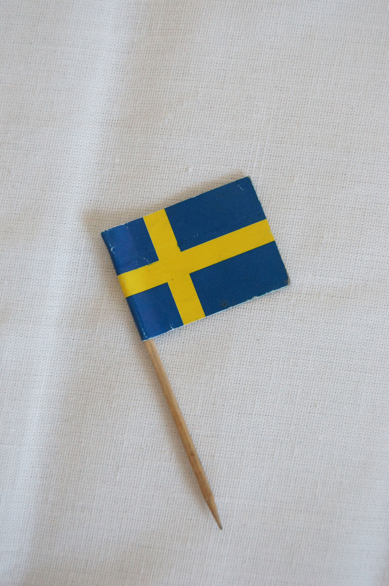

На фотографии справа — флаг Швеции. Шведская культура меня очень интересует: 3-й год я учу шведский язык, а год назад я была в Стокгольме и практиковала свой разговорный шведский. К сожалению, этим летом мне было сложно найти время для занятий шведским языком, поэтому сегодня я решила восполнить упущенное. Сегодня я начала читать книгу Туве Янссон "Mumin" про мумитроллей на оригинальном языке. Это детская несложная литература, но ее невозможно не любить.
